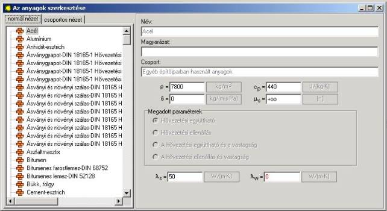

A felhasználónak lehetõsége van új anyagok hozzáadására a fõ menübõl kiválasztva az >>„Eszközök/Anyagok szerkesztése (Ctrl+F) << utasítást.
Megjelenik az anyagok szerkesztési ablaka, a bal oldalán a programban deklarált építési anyagok listájával, a jobb oldalán az anyag megnevezését érintõ mezõkkel, magyarázattal a megnevezéshez, az anyagcsoporthoz, valamint az anyagok hõtechnikai jellemzõit meghatározó mezõk.
A listán az egér és kurzor billentyûk segítségével lehet mozogni. A felhasználónak nincs lehetõsége a programban deklarált anyagok szerkesztésére. A listán lévõ kiválasztandó anyag kijelölése által leolvashatja a hõtechnikai adatokat, megnevezést, magyarázatokat, valamint a hozzá tartozó anyagcsoportot, amik az anyagok szerkesztési ablakának jobb oldali mezõiben láthatók. Itt hozzá lehet adni saját (új) építõanyagokat.
A felhasználó megjelenítheti a anyagok listáját normális vagy csoportos nézetben, a „Normális nézet”, vagy a „Csoportos nézet” könyvjelzõt használva.
A normális nézetben az építési anyagok a kiválasztott válogatási alapnak megfelelõen vannak megjelenítve, pl. ABC sorrendben a megnevezés alapú válogatás esetében. Az anyagok tulajdonságát választva ki válogatási alapnak megkapjuk a sorrendet a növekvõ értékük szerint, pl. az anyagok növekvõ sûrûsége szerint.
A „csoportos nézet”-re átkapcsolva az anyagok listája csoportosításra kerül az anyagtulajdonságok szerint és fa struktúrában jelennek meg, amelyiket ki lehet bontani alacsonyabb szintekre az ikonra kattintással.

Új anyagot a felhasználó a kézi menübõl az „Anyag hozzáadása” utasítást kiválasztva visz be, vagy az F7 funkció billentyû segítségével.
A bevitt „Új anyag 1” nevû térelhatárolóra kattintva megjelenik a szerkesztési mezõi, amelyekben meg lehet adni az anyagot érintõ további adatokat. Ezek a mezõk a következõk:
Az anyag megnevezése – A felhasználó beírja a bevitt építõanyag megnevezését
Magyarázat – az építõanyag megnevezéséhez fûzött magyarázat bevitele,
Csoport – a bevitt új anyaghoz alapértelmezetten „Új csoport 1” megnevezésû csoport van hozzárendelve. A felhasználó megváltoztathatja ezt a „Csoportos nézet”-re átmenve és beírva a megnevezését a „Csoport” mezõben,
r – az anyag száraz sûrûsége, [kg/m3],
Cp – az anyag fajhõje szárazon, [J/kgK],
m – az építési anyag vízpára diffúziós ellenállási együtthatója, [m2s Pa/kg],
A térelhatárolók anyagrétegeinek diffúziós ellenállását határozza meg. Az értéket az építési anyagok adataival egyezõen kell megadni. Ahhoz hogy páraszigetelõ réteget deklaráljuk, vízpára diffúziós ellenállási értékként az „INF” jelet kell beírni. Ez a változó z anyag végtelen nagy vízpára diffúziós ellenállását jelenti.
A felhasználó kiválaszthat egy fizikai paramétert (párt), amelyik az anyagot fogja jellemezni. A következõ lehetõségek választhatók:
- hõvezetési együttható,
- hõvezetési együttható és vastagság,
- hõvezetési ellenállás,
- hõvezetési ellenállás és vastagság.
A programban deklarált építési anyagok a hõvezetési együttható megadásával vannak jellemezve. Ezért a felhasználó új építési anyag bevitelekor ki kell, hogy töltse a új anyagú hõvezetési együttható mezõit is. A következõket kell megadnia:
- ls – a közepesen nedves anyag hõvezetési együtthatója méretezési értékét, W/mK,
- lw – a nedves anyag hõvezetési együtthatója méretezési értékét, W/mK,
Erre az opcióra az anyag vastagsági értéke külön-külön kerül megadásra a térelhatároló mindenegyes rétegére a rétegek táblázatában a "A térelhatárolók definíciójá”-ban. A hõellenállás az adatok alapján szintén ott kerül kiszámításra a beírt adatok alapján.
Az építõanyag olyan fizikai paramétereinek kiválasztásával, mint a hõvezetési együttható és a vastagság, a felhasználó meg tudja határozni a kiválasztott anyag vastagságát, majd fel tudja használni a térelhatároló rétegeinek megadásához. Ezen e módon létre lehet hozni anyagok csoportját, amelyeket fel lehet használni a tervben elõforduló, tipikus térelhatárolók megadásakor.
Az építõanyagok hõtechnikai tulajdonságai közepes nedvességû anyagokra vannak megadva.
Az adatszerkesztési mezõk alatt találhatók az anyag szerkezetét grafikusan bemutató mezõk. Ezek a mezõk csak a felhasználó által betett anyagok esetében aktív. Az újonnan betett anyag, ezen mezõk bármelyikének kijelölése megjeleníti, az anyag szerkezetének megfelelõ, a térelhatárolóban fellépõ hõmérsékletesés és páranyomás grafikonját.
A szerkesztési mezõk számára hozzáférhetõk az egér jobb billentyûjével elõhívható, a szerkesztést könnyítõ utasítások:
- Visszavonás – az utoljára bevitt változtatás visszavonását eredményezi,
- Kivágás – a kijelölt adat kivágását eredményezi
- Másolás – a kijelölt adat másolását eredményezi,
- Beillesztés – a kijelölt adat beillesztését eredményezi
- Mindent kijelöl – az utasítás hosszú jelsort tartalmazó adatok esetén aktív.
Hozzáférhetõ tevékenységek az anyagok szerkesztési ablakában:
Felbukkanó menü:
- Anyag hozzáadása F7 – A felhasználó által bevitt új anyag hozzáadását eredményezi. Alapértelmezetten az anyagok listájának a végére kerül „Új anyag 1” megnevezéssel. Az új anyag minden adatának a beviteléhez a felhasználó ki kell, hogy jelölje azt a listán rákattintással, vagy a billentyûzet nyilainak segítségével is kijelölheti. Ekkor beviheti az összes adatot az anyagok szerkesztési ablakának jobb oldalán található mezõkben. Az új anyag a program által automatikusan létrehozott új anyagcsoporthoz lesz hozzárendelve,
- Új csoport hozzáadása F8 – az utasítás új anyagcsoportot generál, amelyik csak a csoportos nézetben látható „Új csoport 1” megnevezéssel. A felhasználó beviheti a megnevezést a „Csoport” mezõben. Az utasítás csak a csoportos nézetben aktív,
- Anyagok másolása a felhasználó csoportjába – ezen utasítás segítségével a felhasználó bemásolhatja a kiválasztott anyagokat a saját maga által létrehozott anyagcsoportba. Ez fõleg akkor hasznos, amennyiben a felhasználó olyan anyagcsoportot akar bevinni, amely tartalmát a térelhatárolók definíciójakor fogja használni. Beviheti itt pl. az általa leggyakrabban használt építõanyagokat,
- Törlés Ctrl+Del – annak az anyagnak, vagy anyagcsoportnak a törlését eredményezi, amelyiken a kurzor van,
- Sorba rendezés a sûrûség alapján – az anyagokat növekvõ sûrûség szerint sorba rendezi,
- Sorba rendezés a megnevezés szerint – az anyagokat az ABC szerint sorba rendezi,
- Sorba rendezés a fajhõ szerint – az anyagokat növekvõ fajhõjük szerint sorba rendezi,
- A felhasználó anyagainak megjelenítése a végén – a felhasználó által bevitt anyagok a lista végén való megjelenítését eredményezi,
- Mégse – a felhasználó változtatásairól való lemondását jelenti, és bezárja a kézi menüt.
Billentyûzet:
- F7 – Anyag hozzáadása – a felhasználó által bevitt, új anyag hozzáadását eredményezi
- F8 – Új csoport hozzáadása – a felhasználó által bevitt, új anyagcsoportot generál
- Ctrl + Del – a kijelölt anyag, vagy anyagcsoport törlése,
Egér:
- Kattintás a jobb billentyûvel – a kézi menü megjelenítése,
- Kattintás az egér bal billentyûjével a bevitt anyagra – átmenés ennek az anyagnak a szerkesztési mezõihez.